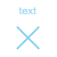

Text and shapes¶
Introduction¶
You may display text or shapes using five different ways with Pine Script®:
- plotchar()
- plotshape()
- plotarrow()
- Labels created with label.new()
- Tables created with table.new() (see Tables)
Which one to use depends on your needs:
- Tables can display text in various relative positions on charts that will not move as users scroll of zoom the chart horizontally. Their content is not tethered to bars. In contrast, text displayed with plotchar(), plotshape() or label.new() is always tethered to a specific bar, so it will move with the bar’s position on the chart. See the page on Tables for more information on them.
- Three function include are able to display pre-defined shapes: plotshape(), plotarrow() and Labels created with label.new().
- plotarrow() cannot display text, only up or down arrows.
- plotchar() and plotshape() can display non-dynamic (not of “series” form) text on any bar or all bars of the chart.
- plotchar() can only display one character while plotshape() can display strings, including line breaks.
- label.new() can display a maximum of 500 labels on the chart. Its text can contain dynamic text, or “series strings”. Line breaks are also supported in label text.
- While plotchar() and plotshape() can display text at a fixed offset in the past or the future, which cannot change during the script’s execution, each label.new() call can use a “series” offset that can be calculated on the fly.
These are a few things to keep in mind concerning Pine Script® strings:
- Since the
textparameter in both plotchar() and plotshape() require a “const string” argument, it cannot contain values such as prices that can only be known on the bar (“series string”). - To include “series” values in text displayed using label.new(), they will first need to be converted to strings using str.tostring().
- The concatenation operator for strings in Pine is
+. It is used to join string components into one string, e.g.,msg = "Chart symbol: " + syminfo.tickerid(where syminfo.tickerid is a built-in variable that returns the chart’s exchange and symbol information in string format). - Characters displayed by all these functions can be Unicode characters, which may include Unicode symbols. See this Exploring Unicode script to get an idea of what can be done with Unicode characters.
- The color or size of text can sometimes be controlled using function parameters, but no inline formatting (bold, italics, monospace, etc.) is possible.
- Text from Pine scripts always displays on the chart in the Trebuchet MS font, which is used in many TradingView texts, including this one.
This script displays text using the four methods available in Pine Script®:
//@version=5
indicator("Four displays of text", overlay = true)
plotchar(ta.rising(close, 5), "`plotchar()`", "ü†Ö", location.belowbar, color.lime, size = size.small)
plotshape(ta.falling(close, 5), "`plotchar()`", location = location.abovebar, color = na, text = "‚Ä¢`plotshape()‚Ä¢`\nü†á", textcolor = color.fuchsia, size = size.huge)
if bar_index % 25 == 0
label.new(bar_index, na, "‚Ä¢LABEL‚Ä¢\nHigh = " + str.tostring(high, format.mintick) + "\nü†á", yloc = yloc.abovebar, style = label.style_none, textcolor = color.black, size = size.normal)
printTable(txt) => var table t = table.new(position.middle_right, 1, 1), table.cell(t, 0, 0, txt, bgcolor = color.yellow)
printTable("•TABLE•\n" + str.tostring(bar_index + 1) + " bars\nin the dataset")
Note that:
- The method used to display each text string is shown with the text, except for the lime up arrows displayed using plotchar(), as it can only display one character.
- Label and table calls can be inserted in conditional structures to control when their are executed,
whereas plotchar() and
plotshape() cannot.
Their conditional plotting must be controlled using their first argument,
which is a “series bool” whose
trueorfalsevalue determines when the text is displayed. - Numeric values displayed in the table and labels is first converted to a string using str.tostring().
- We use the
+operator to concatenate string components. - plotshape() is designed to display a shape
with accompanying text. Its
sizeparameter controls the size of the shape, not of the text. We use na for itscolorargument so that the shape is not visible. - Contrary to other texts, the table text will not move as you scroll or scale the chart.
- Some text strings contain the ü†á Unicode arrow (U+1F807).
- Some text strings contain the
\nsequence that represents a new line.
`plotchar()`¶
This function is useful to display a single character on bars. It has the following syntax:
plotchar(series, title, char, location, color, offset, text, textcolor, editable, size, show_last, display) → void
See the Reference Manual entry for plotchar() for details on its parameters.
As explained in the When the script’s scale must be preserved section of our page on Debugging, the function can be used to display and inspect values in the Data Window or in the indicator values displayed to the right of the script’s name on the chart:
//@version=5
indicator("", "", true)
plotchar(bar_index, "Bar index", "", location.top)
Note that:
- The cursor is on the chart’s last bar.
- The value of bar_index on that bar is displayed in indicator values (1) and in the Data Window (2).
- We use location.top because the default location.abovebar will put the price into play in the script’s scale, which will often interfere with other plots.
plotchar()
also works well to identify specific points on the chart or to validate that conditions
are true when we expect them to be. This example displays an up arrow under bars where
close,
high and
volume
have all been rising for two bars:
//@version=5
indicator("", "", true)
bool longSignal = ta.rising(close, 2) and ta.rising(high, 2) and (na(volume) or ta.rising(volume, 2))
plotchar(longSignal, "Long", "▲", location.belowbar, color = na(volume) ? color.gray : color.blue, size = size.tiny)
Note that:
- We use
(na(volume) or ta.rising(volume, 2))so our script will work on symbols without volume data. If we did not make provisions for when there is no volume data, which is whatna(volume)does by beingtruewhen there is no volume, thelongSignalvariable’s value would never betruebecauseta.rising(volume, 2)yieldsfalsein those cases. - We display the arrow in gray when there is no volume, to remind us that all three base conditions are not being met.
- Because plotchar()
is now displaying a character on the chart, we use
size = size.tinyto control its size. - We have adapted the
locationargument to display the character under bars.
If you don’t mind plotting only circles, you could also use plot() to achieve a similar effect:
//@version=5
indicator("", "", true)
longSignal = ta.rising(close, 2) and ta.rising(high, 2) and (na(volume) or ta.rising(volume, 2))
plot(longSignal ? low - ta.tr : na, "Long", color.blue, 2, plot.style_circles)
This method has the inconvenience that, since there is no relative positioning mechanism with plot() one must shift the circles down using something like ta.tr (the bar’s “True Range”):
`plotshape()`¶
This function is useful to display pre-defined shapes and/or text on bars. It has the following syntax:
plotshape(series, title, style, location, color, offset, text, textcolor, editable, size, show_last, display) → void
See the Reference Manual entry for plotshape() for details on its parameters.
Let’s use the function to achieve more or less the same result as with our second example of the previous section:
//@version=5
indicator("", "", true)
longSignal = ta.rising(close, 2) and ta.rising(high, 2) and (na(volume) or ta.rising(volume, 2))
plotshape(longSignal, "Long", shape.arrowup, location.belowbar)
Note that here, rather than using an arrow character, we are using the shape.arrowup argument
for the style parameter.
It is possible to use different plotshape()
calls to superimpose text on bars.
You will need to use \n followed by a special non-printing character that doesn’t get stripped out to preserve the newline’s functionality.
Here we’re using a Unicode Zero-width space (U+200E). While you don’t see it in the following code’s strings, it is there and can be copy/pasted.
The special Unicode character needs to be the last one in the string for text going up,
and the first one when you are plotting under the bar and text is going down:
//@version=5
indicator("Lift text", "", true)
plotshape(true, "", shape.arrowup, location.abovebar, color.green, text = "A")
plotshape(true, "", shape.arrowup, location.abovebar, color.lime, text = "B\n​")
plotshape(true, "", shape.arrowdown, location.belowbar, color.red, text = "C")
plotshape(true, "", shape.arrowdown, location.belowbar, color.maroon, text = "​\nD")
The available shapes you can use with the style parameter are:
| Argument | Shape | With Text | Argument | Shape | With Text | |
|---|---|---|---|---|---|---|
shape.xcross |
 | shape.arrowup |
||||
shape.cross |
shape.arrowdown |
|||||
shape.circle |
shape.square |
|||||
shape.triangleup |
 |
shape.diamond |
||||
shape.triangledown |
shape.labelup |
 |
||||
shape.flag |
shape.labeldown |
`plotarrow()`¶
The plotarrow function displays up or down arrows of variable length, based on the relative value of the series used in the function’s first argument. It has the following syntax:
plotarrow(series, title, colorup, colordown, offset, minheight, maxheight, editable, show_last, display) → void
See the Reference Manual entry for plotarrow() for details on its parameters.
The series parameter in plotarrow()
is not a “series bool” as in plotchar() and
plotshape();
it is a “series int/float” and there’s more to it than a simple true or false value determining when the arrows are plotted.
This is the logic governing how the argument supplied to series
affects the behavior of plotarrow():
series > 0: An up arrow is displayed, the length of which will be proportional to the relative value of the series on that bar in relation to other series values.series < 0: A down arrow is displayed, proportionally-sized using the same rules.series == 0 or na(series): No arrow is displayed.
The maximum and minimum possible sizes for the arrows (in pixels)
can be controlled using the minheight and maxheight parameters.
Here is a simple script illustrating how plotarrow() works:
//@version=5
indicator("", "", true)
body = close - open
plotarrow(body, colorup = color.teal, colordown = color.orange)
Note how the heigth of arrows is proportional to the relative size of the bar bodies.
You can use any series to plot the arrows. Here we use the value of the “Chaikin Oscillator” to control the location and size of the arrows:
//@version=5
indicator("Chaikin Oscillator Arrows", overlay = true)
fastLengthInput = input.int(3, minval = 1)
slowLengthInput = input.int(10, minval = 1)
osc = ta.ema(ta.accdist, fastLengthInput) - ta.ema(ta.accdist, slowLengthInput)
plotarrow(osc)
Note that we display the actual “Chaikin Oscillator” in a pane below the chart, so you can see what values are used to determine the position and size of the arrows.
Labels¶
Labels are only available in v4 and higher versions of Pine Script®. They work very differently than plotchar() and plotshape().
Labels are objects, like lines and boxes, or tables. Like them, they are referred to using an ID, which acts like a pointer. Label IDs are of “label” type. As with other objects, labels IDs are “time series” and all the functions used to manage them accept “series” arguments, which makes them very flexible.
Note
On TradingView charts, a complete set of Drawing Tools allows users to create and modify drawings using mouse actions. While they may sometimes look similar to drawing objects created with Pine Script® code, they are unrelated entities. Drawing objects created using Pine code cannot be modified with mouse actions, and hand-drawn drawings from the chart user interface are not visible from Pine scripts.
Labels are advantageous because:
- They allow “series” values to be converted to text and placed on charts. This means they are ideal to display values that cannot be known before time, such as price values, support and resistance levels, of any other values that your script calculates.
- Their positioning options are more flexible that those of the
plot*()functions. - They offer more display modes.
- Contrary to
plot*()functions, label-handling functions can be inserted in conditional or loop structures, making it easier to control their behavior. - You can add tooltips to labels.
One drawback to using labels versus plotchar() and
plotshape()
is that you can only draw a limited quantity of them on the chart.
The default is ~50, but you can use the max_labels_count parameter in your
indicator() or
strategy()
declaration statement to specify up to 500. Labels, like lines and boxes,
are managed using a garbage collection mechanism which deletes the oldest ones on the chart,
such that only the most recently drawn labels are visible.
Your toolbox of built-ins to manage labels are all in the label namespace. They include:
- label.new() to create labels.
label.set_*()functions to modify the properties of an existing label.label.get_*()functions to read the properties of an existing label.- label.delete() to delete labels
- The label.all
array which always contains the IDs of all the visible labels on the chart.
The array’s size will depend on the maximum label count for your script and how many of those you have drawn.
aray.size(label.all)will return the array’s size.
Creating and modifying labels¶
The label.new() function creates a new label. It has the following signature:
label.new(x, y, text, xloc, yloc, color, style, textcolor, size, textalign, tooltip) → series label
The setter functions allowing you to change a label’s properties are:
- label.set_x()
- label.set_y()
- label.set_xy()
- label.set_text()
- label.set_xloc()
- label.set_yloc()
- label.set_color()
- label.set_style()
- label.set_textcolor()
- label.set_size()
- label.set_textalign()
- label.set_tooltip()
They all have a similar signature. The one for label.set_color() is:
label.set_color(id, color) → void
where:
idis the ID of the label whose property is to be modified.- The next parameter is the property of the label to modify. It depends on the setter function used. label.set_xy() changes two properties, so it has two such parameters.
This is how you can create labels in their simplest form:
//@version=5
indicator("", "", true)
label.new(bar_index, high)
Note that:
- The label is created with the parameters
x = bar_index(the index of the current bar, bar_index) andy = high(the bar’s high value). - We do not supply an argument for the function’s
textparameter. Its default value being an empty string, no text is displayed. - No logic controls our label.new() call, so labels are created on every bar.
- Only the last 54 labels are displayed because our
indicator() call does not use
the
max_labels_countparameter to specify a value other than the ~50 default. - Labels persist on bars until your script deletes them using label.delete(), or garbage collection removes them.
In the next example we display a label on the bar with the highest high value in the last 50 bars:
//@version=5
indicator("", "", true)
// Find the highest `high` in last 50 bars and its offset. Change it's sign so it is positive.
LOOKBACK = 50
hi = ta.highest(LOOKBACK)
highestBarOffset = - ta.highestbars(LOOKBACK)
// Create label on bar zero only.
var lbl = label.new(na, na, "", color = color.orange, style = label.style_label_lower_left)
// When a new high is found, move the label there and update its text and tooltip.
if ta.change(hi)
// Build label and tooltip strings.
labelText = "High: " + str.tostring(hi, format.mintick)
tooltipText = "Offest in bars: " + str.tostring(highestBarOffset) + "\nLow: " + str.tostring(low[highestBarOffset], format.mintick)
// Update the label's position, text and tooltip.
label.set_xy(lbl, bar_index[highestBarOffset], hi)
label.set_text(lbl, labelText)
label.set_tooltip(lbl, tooltipText)
Note that:
- We create the label on the first bar only by using the var
keyword to declare the
lblvariable that contains the label’s ID. Thex,yandtextarguments in that label.new() call are irrelevant, as the label will be updated on further bars. We do, however, take care to use thecolorandstylewe want for the labels, so they don’t need updating later. - On every bar, we detect if a new high was found by testing for changes in the value of
hi - When a change in the high value occurs, we update our label with new information.
To do this, we use three
label.set*()calls to change the label’s relevant information. We refer to our label using thelblvariable, which contains our label’s ID. The script is thus maintaining the same label throughout all bars, but moving it and updating its information when a new high is detected.
Here we create a label on each bar, but we set its properties conditionally, depending on the bar’s polarity:
//@version=5
indicator("", "", true)
lbl = label.new(bar_index, na)
if close >= open
label.set_text( lbl, "green")
label.set_color(lbl, color.green)
label.set_yloc( lbl, yloc.belowbar)
label.set_style(lbl, label.style_label_up)
else
label.set_text( lbl, "red")
label.set_color(lbl, color.red)
label.set_yloc( lbl, yloc.abovebar)
label.set_style(lbl, label.style_label_down)
Positioning labels¶
Labels are positioned on the chart according to x (bars) and y (price) coordinates.
Five parameters affect this behavior: x, y, xloc, yloc and style:
x- Is either a bar index or a time value. When a bar index is used, the value can be offset in the past or in the future (maximum of 500 bars in the future).
Past or future offsets can also be calculated when using time values.
The
xvalue of an existing label can be modified using label.set_x() or label.set_xy(). xloc- Is either xloc.bar_index (the default)
or xloc.bar_time.
It determines which type of argument must be used with
x. With xloc.bar_index,xmust be an absolute bar index. With xloc.bar_time,xmust be a UNIX time in milliseconds corresponding to the time value of a bar’s open. Thexlocvalue of an existing label can be modified using label.set_xloc(). y- Is the price level where the label is positioned. It is only taken into account with the default
ylocvalue ofyloc.price. Ifylocis yloc.abovebar or yloc.belowbar then theyargument is ignored. Theyvalue of an existing label can be modified using label.set_y() or label.set_xy(). yloc- Can be yloc.price (the default),
yloc.abovebar or
yloc.belowbar.
The argument used for
yis only taken into account with yloc.price. Theylocvalue of an existing label can be modified using label.set_yloc(). style- The argument used has an impact on the visual appearance of the label and on its position relative to the reference point
determined by either the
yvalue or the top/bottom of the bar when yloc.abovebar or yloc.belowbar are used. Thestyleof an existing label can be modified using label.set_style().
These are the available style arguments:
| Argument | Label | Label with text | Argument | Label | Label with text | |
|---|---|---|---|---|---|---|
label.style_xcross |
label.style_label_up |
|||||
label.style_cross |
label.style_label_down |
|||||
label.style_flag |
label.style_label_left |
|||||
label.style_circle |
label.style_label_right |
|||||
label.style_square |
 |
label.style_label_lower_left |
||||
label.style_diamond |
label.style_label_lower_right |
|||||
label.style_triangleup |
label.style_label_upper_left |
|||||
label.style_triangledown |
label.style_label_upper_right |
|||||
label.style_arrowup |
label.style_label_center |
|||||
label.style_arrowdown |
label.style_none |
When using xloc.bar_time,
the x value must be a UNIX timestamp in milliseconds. See the page on Time for more information.
The start time of the current bar can be obtained from the
time built-in variable.
The bar time of previous bars is time[1], time[2] and so on. Time can also be set to an absolute value with the
timestamp function.
You may add or subtract periods of time to achieve relative time offset.
Let’s position a label one day ago from the date on the last bar:
//@version=5
indicator("")
daysAgoInput = input.int(1, tooltip = "Use negative values to offset in the future")
if barstate.islast
MS_IN_ONE_DAY = 24 * 60 * 60 * 1000
oneDayAgo = time - (daysAgoInput * MS_IN_ONE_DAY)
label.new(oneDayAgo, high, xloc = xloc.bar_time, style = label.style_label_right)
Note that because of varying time gaps and missing bars when markets are closed, the positioning of the label may not always be exact. Time offsets of the sort tend to be more reliable on 24x7 markets.
You can also offset using a bar index for the x value, e.g.:
label.new(bar_index + 10, high)
label.new(bar_index - 10, high[10])
label.new(bar_index[10], high[10])
Reading label properties¶
The following getter functions are available for labels:
They all have a similar signature. The one for label.get_text() is:
label.get_text(id) → series string
where id is the label whose text is to be retrieved.
Cloning labels¶
The label.copy() function is used to clone labels. Its syntax is:
label.copy(id) → void
Deleting labels¶
The label.delete() function is used to delete labels. Its syntax is:
label.delete(id) → void
To keep only a user-defined quantity of labels on the chart, one could use code like this:
//@version=5
MAX_LABELS = 500
indicator("", max_labels_count = MAX_LABELS)
qtyLabelsInput = input.int(5, "Labels to keep", minval = 0, maxval = MAX_LABELS)
myRSI = ta.rsi(close, 20)
if myRSI > ta.highest(myRSI, 20)[1]
label.new(bar_index, myRSI, str.tostring(myRSI, "#.00"), style = label.style_none)
if array.size(label.all) > qtyLabelsInput
label.delete(array.get(label.all, 0))
plot(myRSI)
Note that:
- We define a
MAX_LABELSconstant to hold the maximum quantity of labels a script can accommodate. We use that value to set themax_labels_countparameter’s value in our indicator() call, and also as themaxvalvalue in our input.int() call to cap the user value. - We create a new label when our RSI breaches its highest value of the last 20 bars.
Note the offset of
[1]we use inif myRSI > ta.highest(myRSI, 20)[1]. This is necessary. Without it, the value returned by ta.highest() would always include the current value ofmyRSI, somyRSIwould never be higher than the function’s return value. - After that, we delete the oldest label in the label.all array that is automatically maintained by the Pine Script® runtime and contains the ID of all the visible labels drawn by our script. We use the array.get() function to retrieve the array element at index zero (the oldest visible label ID). We then use label.delete() to delete the label linked with that ID.
Note that if one wants to position a label on the last bar only, it is unnecessary and inefficent to create and delete the label as the script executes on all bars, so that only the last label remains:
// INEFFICENT!
//@version=5
indicator("", "", true)
lbl = label.new(bar_index, high, str.tostring(high, format.mintick))
label.delete(lbl[1])
This is the efficient way to realize the same task:
//@version=5
indicator("", "", true)
if barstate.islast
// Create the label once, the first time the block executes on the last bar.
var lbl = label.new(na, na)
// On all iterations of the script on the last bar, update the label's information.
label.set_xy(lbl, bar_index, high)
label.set_text(lbl, str.tostring(high, format.mintick))
Realtime behavior¶
Labels are subject to both commit and rollback actions, which affect the behavior of a script when it executes in the realtime bar. See the page on Pine Script®’s Execution model.
This script demonstrates the effect of rollback when running in the realtime bar:
//@version=5
indicator("", "", true)
label.new(bar_index, high)
On realtime bars, label.new() creates a new label on every script update, but because of the rollback process, the label created on the previous update on the same bar is deleted. Only the last label created before the realtime bar’s close will be committed, and thus persist.